- Auftraggeber
- Michael Nef, Senior Strategic UX Advisor, Migros-Genossenschafts-Bund
- Rolle
- UX/UI Designer im 2er-Team
- Verantwortung
- End-to-End: Research, Konzept, Wireframes, Usability Tests, Hi-Fi-Prototyp
- Zeitraum
- [Zeitraum ergänzen]
- Tools
- Figma, Miro
Nachhaltigkeit, die man im Einkauf spürt
Im Auftrag des Migros-Genossenschafts-Bunds haben wir untersucht, wie die Migros-App zu nachhaltigeren Einkäufen motivieren kann. Das Ergebnis ist Eco Island: Eco-Werte auf einen Blick plus ein Punktesystem, das bewussten Konsum belohnt.
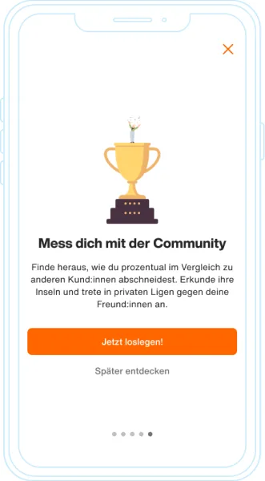
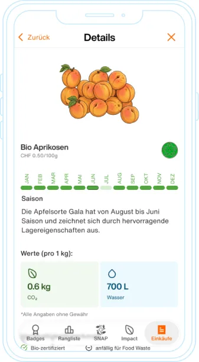

Wer nachhaltig einkaufen will, muss heute lesen, vergleichen und rechnen.
Unübersichtlich
Eco-Informationen sind auf Detailseiten versteckt und müssen interpretiert werden.
Nicht vergleichbar
Es fehlt ein einheitlicher Massstab, um Produkte untereinander zu vergleichen.
Nicht belohnt
Nachhaltige Entscheidungen bleiben ohne Feedback oder spürbaren Anreiz.
Wie könnten wir den Nachhaltigkeits-Impact eines Produkts auf einen Blick verständlich machen und bewusste Einkäufe so belohnen, dass sie zur Gewohnheit werden?
Was Kund:innen wirklich brauchen
App-Analyse, Screener, qualitative Interviews [Anzahl], 4 Personas und Value Proposition Canvas.
Wissen ist da, Zeit nicht.
Kund:innen wollen nachhaltig handeln, entscheiden beim Einkauf aber in Sekunden. Was nicht sofort sichtbar ist, wird ignoriert.
Zahlen ohne Kontext bleiben abstrakt.
CO₂- und Wasserwerte überzeugen erst, wenn sie greifbar und zwischen Produkten vergleichbar sind.
Motivation braucht Rückmeldung.
Ohne sichtbaren Fortschritt fühlt sich ein nachhaltiger Kauf folgenlos an.
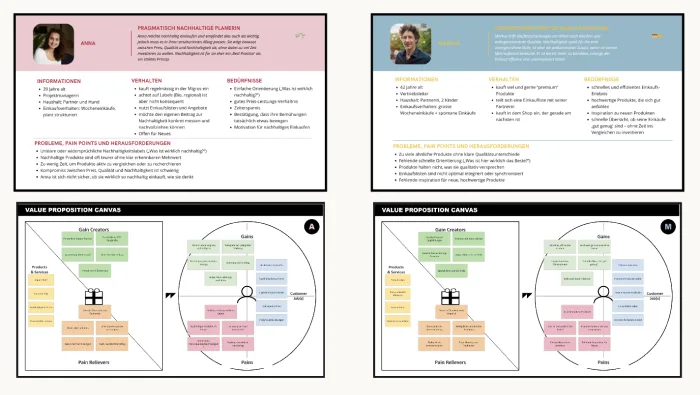
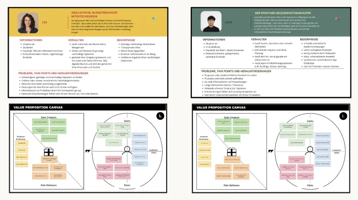
Von sieben Ideen zu einem Konzept
Aus den drei Hürden entstanden sieben Ansätze. Wir haben sie gegen Research, Marktanalyse und Machbarkeit bewertet.
Unübersichtlich
Eco-Dashboard, Post-Purchase Insights
Nicht vergleichbar
Meta-Score, 1-Click-Tausch
Nicht belohnt
Rabattsystem, virtuelle Insel, Real-World Impact
Entscheid: Eco-Werte direkt auf der Produktseite, kombiniert mit Eco Island. Nachhaltige Käufe bringen Eco-Punkte, die eine virtuelle Insel wachsen lassen.
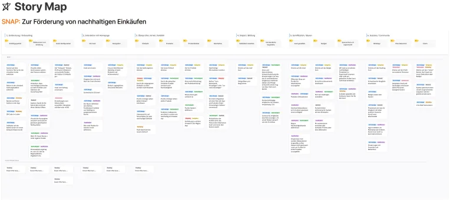
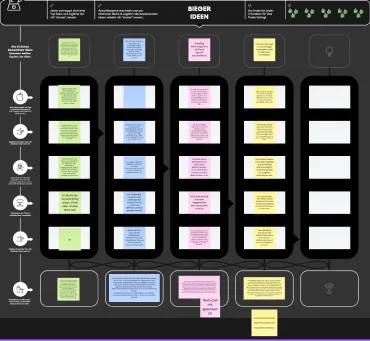
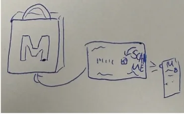
Schnell skizzieren, früh klicken
Drei Fidelity-Stufen, jede mit einer klaren Frage.
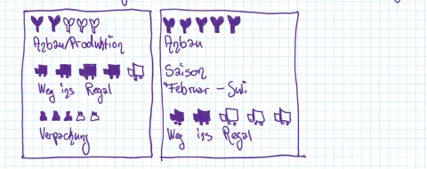
Paper: Welche Richtungen gibt es?
Varianten skizzieren, im Team diskutieren.
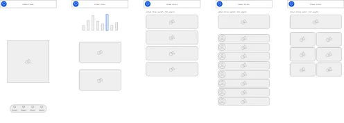
Lo-Fi: Stimmt die Struktur?
Informationsarchitektur ohne Farbe prüfen.
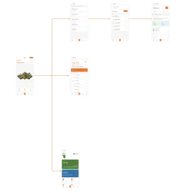
Mid-Fi: Funktioniert der Flow?
Klickbarer Prototyp für die ersten Tests.
8 Tests, drei entscheidende Änderungen
Wir haben den klickbaren Prototyp mit 8 Personen aus der Zielgruppe getestet. Fokus: intuitive Navigation und verständliche Nachhaltigkeitsdaten.
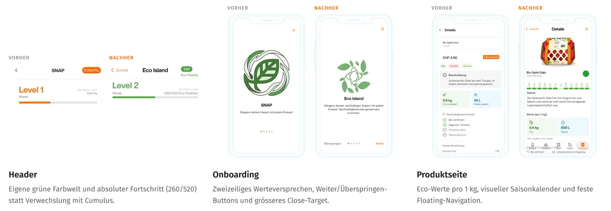
Header
Eigene grüne Farbwelt und absoluter Fortschritt (260/520) statt Verwechslung mit Cumulus.
Onboarding
Zweizeiliges Werteversprechen, Weiter/Überspringen-Buttons und grösseres Close-Target.
Produktseite
Eco-Werte pro 1 kg, visueller Saisonkalender und feste Floating-Navigation.
Eco Island
Das finale UI basiert auf dem Migros-Designsystem und nutzt die Freiheiten des Kampagnen-Stils, damit sich das Feature vertraut und trotzdem lebendig anfühlt.
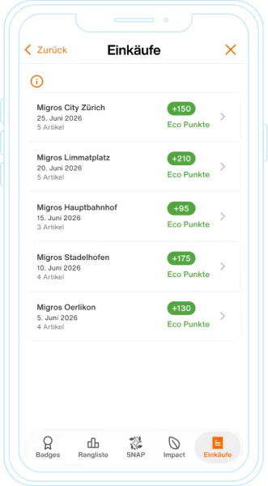
So wächst die Insel
Eco-Punkte aus nachhaltigen Einkäufen werden im Shop gegen neue Elemente für die Insel eingetauscht. Jedes Element erklärt seinen ökologischen Nutzen, und die Insel verändert sich sichtbar.
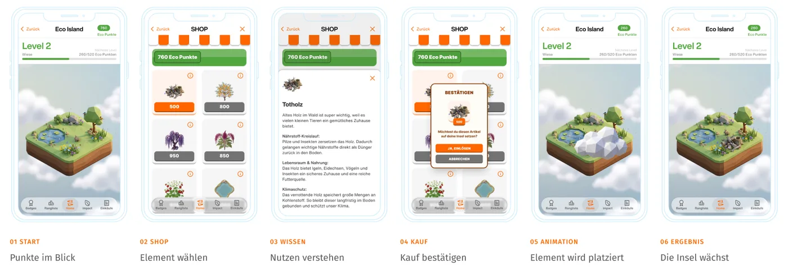
Was sich verändert hat
«Ich habe die Zusammenarbeit und die Studienprojekte aus dem Studiengang Digital Design als sehr bereichernd erlebt. Besonders geschätzt habe ich die hohe Motivation der Studierenden sowie die frischen Perspektiven, die in die Projekte eingebracht wurden.»Michael Nef, Senior Strategic UX Advisor, Migros-Genossenschafts-Bund
Was ich mitnehme
Kontext statt Daten.
Eine Zahl überzeugt erst mit Vergleichsmassstab. «Pro 1 kg» hat mehr bewirkt als jedes zusätzliche Label.
Gamification braucht klare Abgrenzung.
Ein neues Punktesystem neben Cumulus muss sich visuell und sprachlich eindeutig unterscheiden, sonst entsteht Verwirrung.
Früh testen spart Schleifen.
Der klickbare Mid-Fi-Prototyp deckte Navigationsprobleme auf, bevor wir Zeit ins UI investierten.
Nächste Schritte: Langzeit-Test über mehrere Einkaufswochen, um zu prüfen, ob die Motivation anhält, und ein A/B-Test der Eco-Werte im Warenkorb.